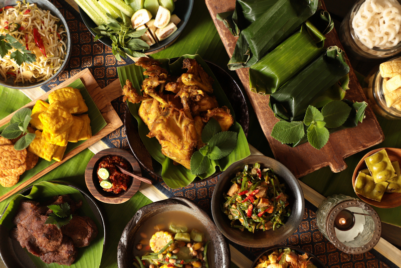

5 TOP MAKANAN KHAS JAWA BARAT
Makanan Khas Jawa Barat - Jawa Barat merupakan salah satu provinsi di Indonesia yang mempunyai keanekaragaman nilai, tradisi, serta budaya. Provinsi ini juga menjadi salah satu provinsi yang dapat dijadikan sebagai tempat wisata tujuan. Dengan pemandangan alam yag apik, tempat belanja yang beragam, serta aneka kuliner yang lezat, Jawa Barat mempunyai daya pikatnya sendiri.
Keberagaman kuliner khas Jawa Barat tidak lepas dari kebudayaan masyarakat Sunda yang banyak bertempat tinggal di daerah tersebut. Seiring dengan berkembangnya zaman, makanan khas ini tetap ada, diperkenalkan secara turun-temurun, serta banyak pula yang menjadi makanan populer.
Makanan khas Jawa Barat mempunyai karakteristiknya sendiri misalnya untuk makanan lauk biasanya memiliki rasa yang cederung asam dan pedas, menggunakan sayur mentah sebagai pendamping atau lalapan, banyak masakan yang menggunakan ikan, serta banyak camilan yang
Walaupun sekarang banyak kuliner khas Jawa Barat juga sudah bisa ditemui di daerah lain, tapi tentu saja tidak akan selezat dari daerah aslinya. Tiap-tiap kuliner mempunyai ciri khasnya masing-masing dimulai dari segi bahan baku, bumbu pelengkap, hingga bentuknya. Maka dari itu, jika anda mengunjungi provinsi Jawa Barat sebaiknya luangkan waktu untuk berwisata kuliner. Berikut beberapa jenis makanan khas Jawa Barat yang lezat dan bisa anda coba waktu berkunjung ke sana.